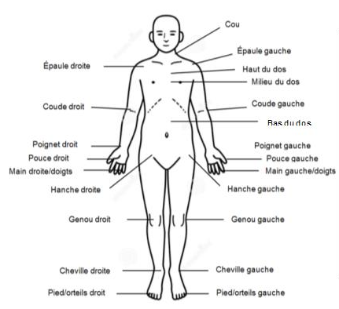

INFORMATIONS SOCIO-DÉMOGRAPHIQUES
Complétez les informations ci-dessous. Cochez une seule case par question.
Sexe : Femme Homme Autre Préfère ne pas répondre État civil : CélibataireMariéConjoint de fait Veuf/veuveSéparéDivorcé Scolarité : < 11 ans de scolarité (< Diplôme d'études secondaires)Diplôme d'études secondaires (DEP)Formation professionnelle Formation collégialeFormation universitaire 1er cycleFormation universitaire 2ème et 3ème cycle Statut d’emploi : À l’emploi RetraitéSans emploi Au foyerAutre Revenu familial annuel moyen : < 20 000 $ / année Entre 20 000 et 39 999 $ / annéeEntre 40 000 et 59 999$ / annéeEntre 60 000 et 79 999 $ / année> 80 000 $ / année Milieu de vie : Urbain (ville) Rural (campagne) Type d'habitation : Maison unifamilialeCottageBungalowCondo /appartementAppartement
ANTÉCÉDANTS MÉDICAUX
Indiquez les conditions de santé pour lesquelles vous avez déjà eu un diagnostic dans votre vie ainsi que l’année du diagnostic. Si vous avez eu une même condition plusieurs fois,
inscrire les années correspondantes.
{{ant.antecedents}}
Oui Non Avez-vous l’une des conditions de santé ci-dessous ? Hypertension artérielle Dyslipidémie Dépression Obésité Diabète de type I ou II Trouble anxieux Autre

Troubles musculo-squelettiques
Avez-vous déjà eu des fractures ?
Oui Non
À l’heure actuelle, avez-vous des douleurs à l’une ou plusieurs des articulations illustrées sur l’image ci-dessous? Si OUI, cochez lesquelles dans l’encadrer à droite de l’image. Si NON, cochez « Aucune douleur à rapporter »
Aucune douleur Cou Epaule droite Epaule gauche Milieu du dos Haut du dos Bas du dos Coude gauche Coude droit Poignet gauche Poignet droit Main/doigts gauche Main/doigts droit Pouce gauche Pouce droit Hanche gauche Hanche droite Genou gauche Genou droit Cheville gauche Cheville droite pied/orteils gauche pied/orteils droit
Consommation de produits alcoolisés, tabagiques ou drogues (si actuel/occasionnel, indiquez la fréquence.
ex : nombre de cigarette/jour ou nombre de consommation/sem/jour, etc)
Alcool Jamais Ancien Actuel/occasionnel
Tabac Jamais Ancien Actuel/occasionnel
Drogue Jamais Ancien Actuel/occasionnel
Énumérer tous les médicaments que vous prenez régulièrement. Inscrivez
le nom du médicament en lettres moulées, il n’est pas nécessaire de spécifier la dose. Ou Je ne prends pas de médicaments